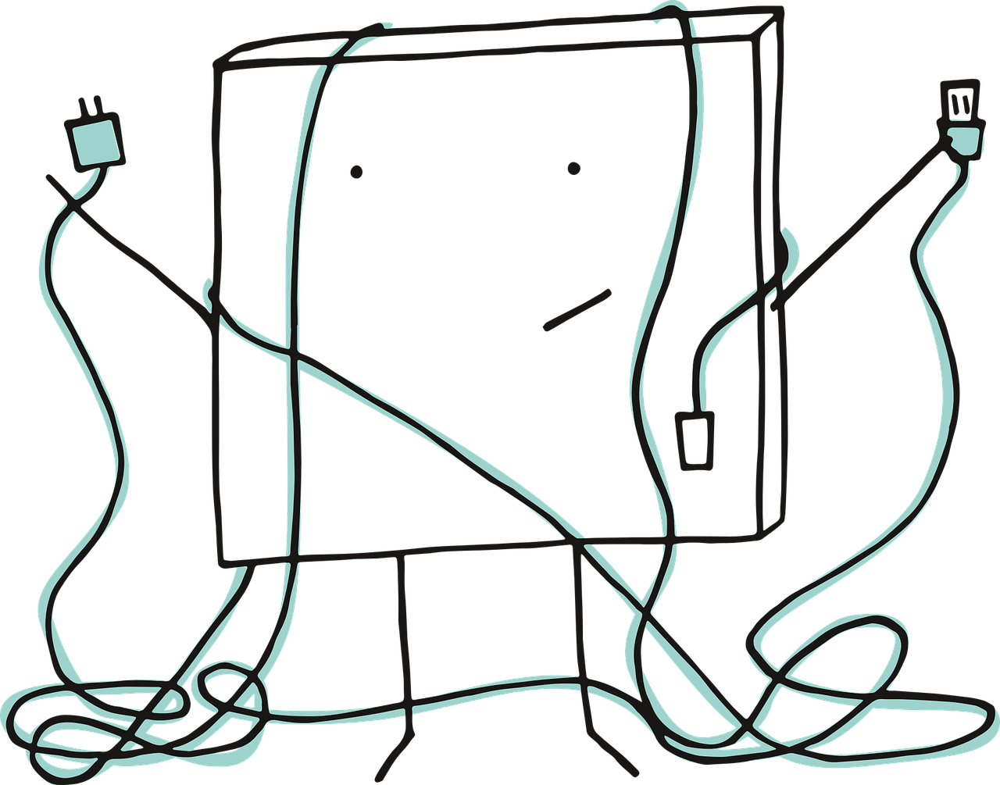

<ion-header>
  <ion-toolbar>
    <ion-title>Hiba</ion-title>
    <ion-buttons slot="end">
      <ion-button [disabled]="disabled" (click)="refresh()">
        <ion-spinner *ngIf="disabled" name="bubbles"></ion-spinner>
        &nbsp;&nbsp;&nbsp;&nbsp; Újrapróbálkozás
      </ion-button>
    </ion-buttons>
  </ion-toolbar>
</ion-header>

<ion-content>
  <ion-card>
    <ion-card-header>
      
      <ion-card-subtitle></ion-card-subtitle>
      <ion-card-title>Hiba történt</ion-card-title>
    </ion-card-header>
    <ion-card-content>
      Ellenőrizd az internetkapcsolatodat és próbáld újra!
    </ion-card-content>
  </ion-card>
</ion-content>
